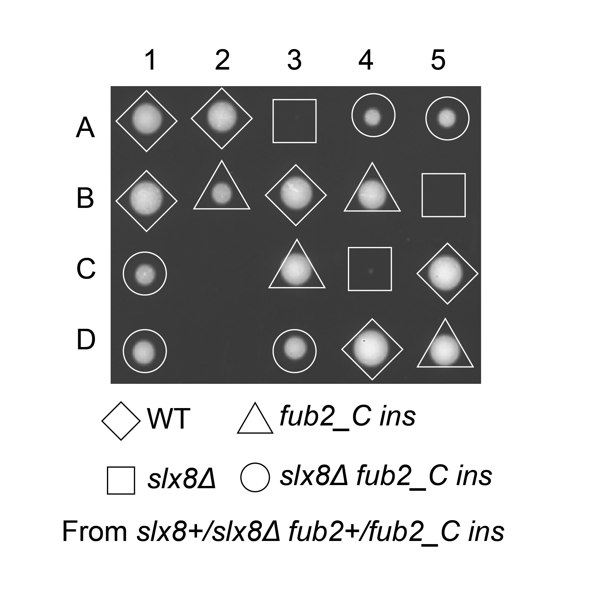

| Query_essential_gene_ID | SPBC3D6.11c |
| Query_essential_gene_name | slx8 |
| Query_essential_gene_product | SUMO-targeted ubiquitin-protein ligase E3 Slx8 |
| Suppressor_gene_ID | SPBC16H5.03c |
| Suppressor_gene_name | uba2 |
| Suppressor_gene_product | SUMO activating enzyme E1-type Uba2 (predicted) |
| Mutagen | T-BOE |
| Suppressor_mutation_type | Insertion |
| Allele_note | Chr2: 2296854|2296855; ORF: SPBC16H5.03c |
A
A: Candidate | Tetrad dissection